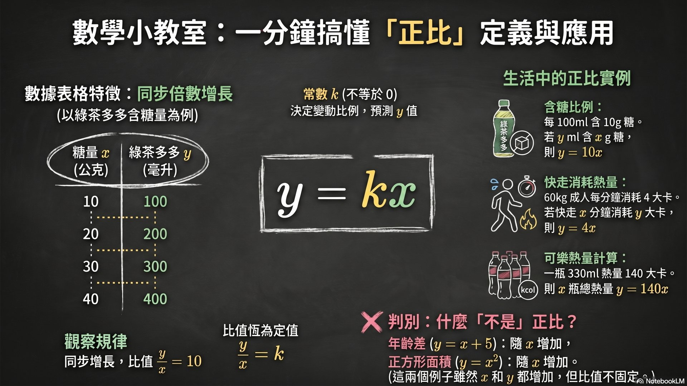
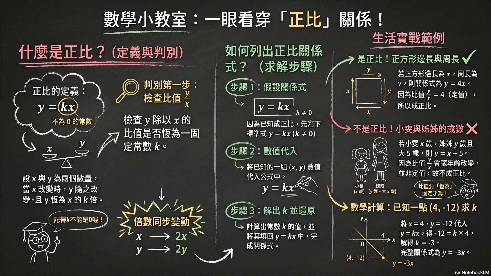
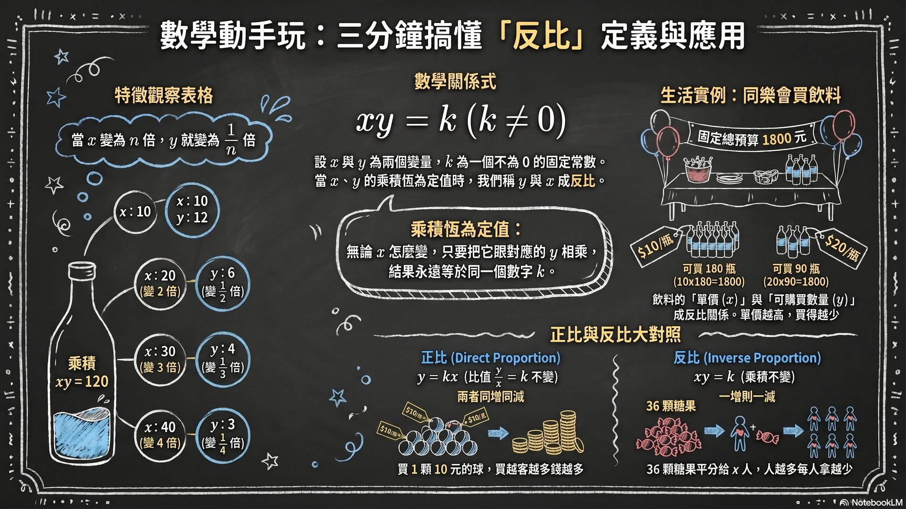
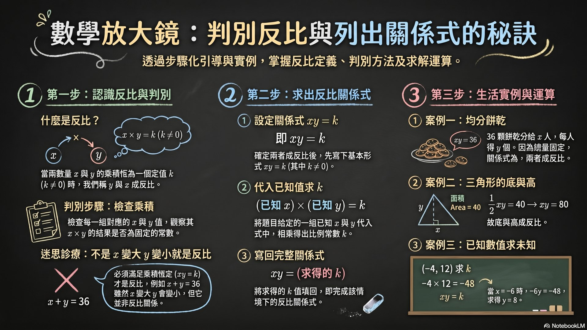
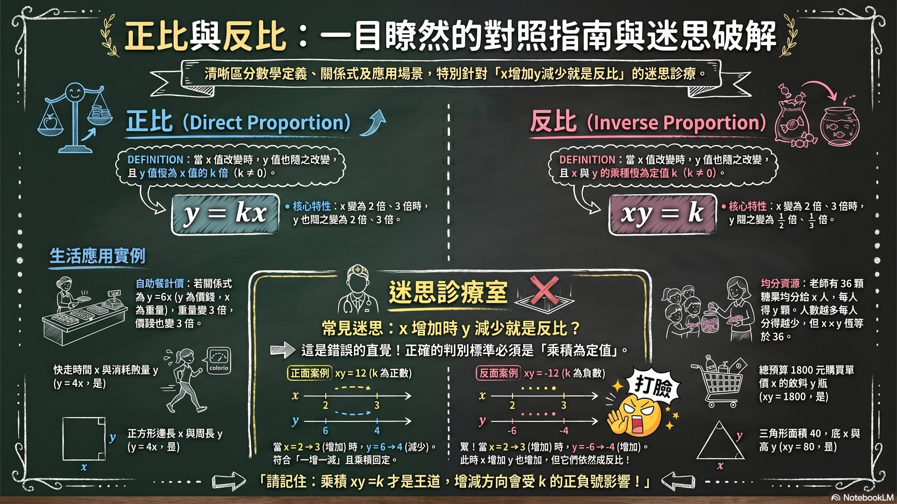

互動黑板粉筆風格教學平台 ｜ 七年級下學期 第三章 比例
設 x 與 y 為兩個數量，k 是不為 0 的常數。
當 x 值改變時，y 值也隨之改變，且 y 值恆為 x 值的 k 倍，
即 y = kx（k ≠ 0）
滿足此關係式，稱 y 與 x 成正比。
拖曳滑桿改變 k 值，觀察直線斜率如何變化
【記憶】下列哪個關係式表示 y 與 x 成正比？
【理解】若 y 與 x 成正比，當 x 增加為原來的 5 倍，則 y 變成原來的幾倍？
【記憶】以 x 為邊長的正方形，周長為 y，y 與 x 的關係式為何？y 與 x 是否成正比？
【理解】小明和姐姐歲數相差 6 歲，小明 x 歲，姐姐 y 歲，y 與 x 是否成正比？
【理解】已知 y 與 x 成正比，x = 3 時 y = 15，則比例常數 k = ？
【應用】承上（k=5），當 x = −4 時，y = ？
設 x 與 y 為兩個數量，k 是不為 0 的常數。
當 x 值改變時，y 值也隨之改變，且 x 與 y 的乘積恆為定值，
即 xy = k（k ≠ 0）
滿足此關係式，稱 y 與 x 成反比。
拖曳滑桿改變 k 值，觀察雙曲線位置
【記憶】xy = k（k≠0），當 k = 12，x = 3，則 y = ？
【理解】若 y 與 x 成反比，當 x 變成原來的 3 倍，y 變成原來的？
【記憶】36 個糖果均分給 x 人，每人 y 顆，y 與 x 成？
【理解】面積為 60 的三角形，底為 x，高為 y，則 y 與 x 成？
【理解】已知 y 與 x 成反比，x = 6，y = −2，則 xy = ？k = ？
【應用】背完 1200 個英文單字，每天背 x 個，需要 y 天，若每天背 30 個，需幾天？

正比定義與應用

正比關係式圖解

反比定義與應用

反比判別與運算

正比與反比教學對照
YouTube 教學影片
請提供 YouTube 網址以嵌入影片